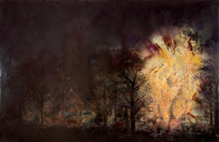
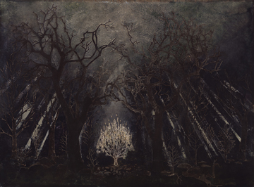
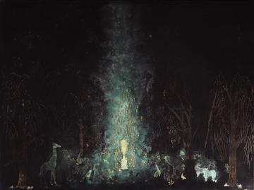
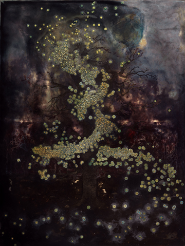
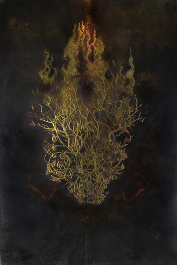

|
> Previous Exhibitions > 2008 > Clay Witt | The Peaceable Kingdom
Clay Witt
The Peaceable Kingdom
5– 31 December 2008
First Friday Opening
Friday, 5 December
5:30 – 8 pm
Feast on Art
Lunch with the artist series
Featuring Clay Witt
Wednesday, 10 December
12 noon
Feast Holiday Luncheon:
celebrate the artistry of good food
Taste your way through a cocktail luncheon
of delicious international & local offerings from feast!
Reservations required:
call 434.973.5566 or email LesYeuxduMonde@aol.com
|
|
The Feast! Lunches with the Artist are $10 per person. Reservations and payment must be received at least 48 hours in advance.
Artist's Talk and Slide Show
Featuring Clay Witt
Tuesday, 16 December
6 pm
 |

Clay Witt. The Peaceable Kingdom, 2008.
Intaglio prints, cut paper, pigment, polymer emulsion, rust and gold leaf on canvas on walnut, 48 x 72 inches
Download exhibition press release (pdf) >
Download exhibition press kit (pdf) >

Clay Witt. Signs Unseen: The Burning Bush, 2007.
Cut paper, polymer emulsion, ink, mineral pigments, gesso, rust, and white gold leaf on canvas, mounted to panel, 36 x 48 inches

Clay Witt. Et in Arcadia Ego, 2008.
Intaglio prints, cut paper, pigment, polymer emulsion, rust, gesso, and gold leaf on canvas mounted on panel, 36 x 48 inches

Clay Witt. Tree of Knowledge, 2007-2008.
Cut paper, pigment, polymer emulsion, rust, gesso, and gold leaf on canvas mounted to panel, 48 x 36 inches

Clay Witt. Lazarus, 2007.
Cut paper, pigment, polymer emulsion, rust, gesso and gold leaf on panel, 48 x 36 inches

Clay Witt. Tree of Life, 2008.
Cut paper, pigment, polymer emulsion, rust and gold leaf on canvas on wood, 72 x 48 inches
|